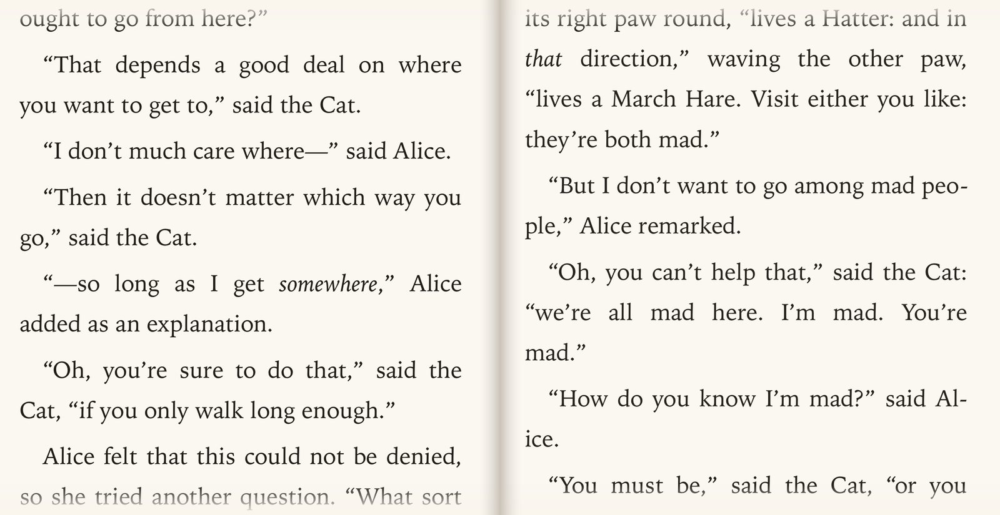
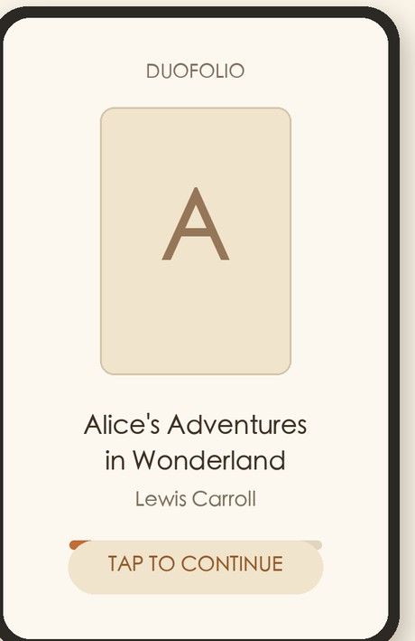
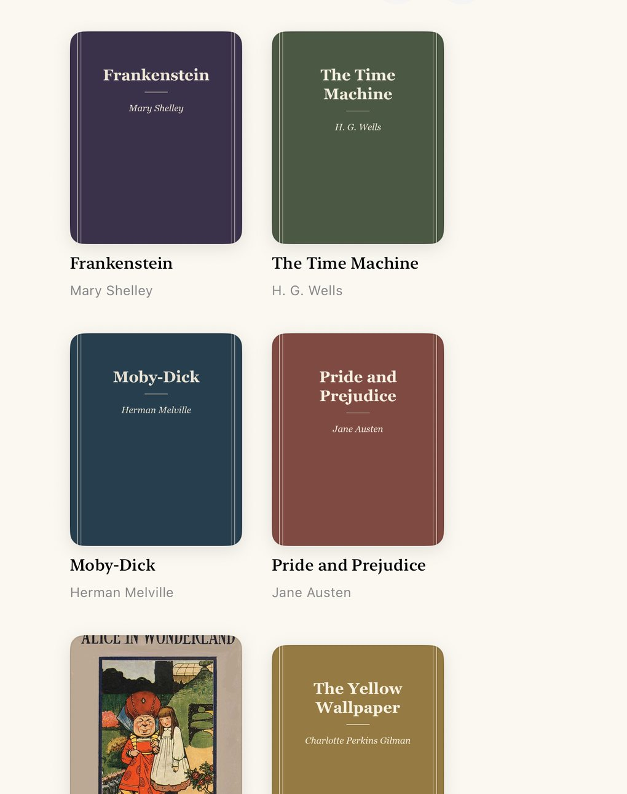

一个人写的。只为了回答一个问题：在一台能像书一样打开的设备上，阅读应该是什么手感？
DuoFolio 是围着折痕写的，不只是「能在折痕上跑」。如果你正在它和别的选择之间掂量，下一页是诚实的横评——包括哪些情况下免费的那个更合适。
书页顺着内屏的两半铺开，读起来是同一张跨页——展开就是真双页，合上之后外屏变成你的书签。整个书库都不离开这台设备。
获取 DuoFolio — US$6.99把 Duo 摊开，书也跟着摊开。
偶数页在左，奇数页在右，折痕那一侧是一道柔和的纸缝。DuoFolio 翻的是整张纸——不是把一栏文字摊到更宽的屏幕上，然后管它叫跨页。

压住页角，整张纸跟着手指起来。
DuoFolio 不用滑动，也不用淡入淡出。纸是真的卷起来的——页角向上翻卷，纸背接住光，阴影顺着纸缝落下来，而下一页早已在下面等着。拖到一半它就那么悬着；松手，它自己会落定。
这是折叠屏能做、直板机做不到的一件事：一页纸像一页纸，长在一台能像书一样打开的设备上。

把 Duo 合上，外屏就变成一张封面卡——封面、书名、读到哪儿了，不用打开手机就能看见。再翻开，阅读会接着你离开的那一栏继续，无论手机是合着、半开还是全展开。

导入的 EPUB 不会被上传。没有要注册的账号，没有要关掉的统计，也不依赖网络。阅读位置、配色和字号只存在这台设备上。
为什么这对阅读器尤其重要：一个阅读 app 看得见你读的每一页。DuoFolio 的做法是压根没有可收集的东西，而不是承诺「会小心处理你的数据」。

衬线正文、调过的行距、为「读几小时」而不是「读几分钟」配的纸感主题。屏幕更大时，版心是变宽而不是被拉伸——iPad 上和 Duo 上遵循同一套版式规则。

简体中文、繁體中文、English、日本語、한국어、Deutsch、Français、Español、Português (Brasil)——界面和商店页都是，不只是菜单。
一个人写的。只为了回答一个问题：在一台能像书一样打开的设备上，阅读应该是什么手感？
DuoFolio 是围着折痕写的，不只是「能在折痕上跑」。如果你正在它和别的选择之间掂量，下一页是诚实的横评——包括哪些情况下免费的那个更合适。